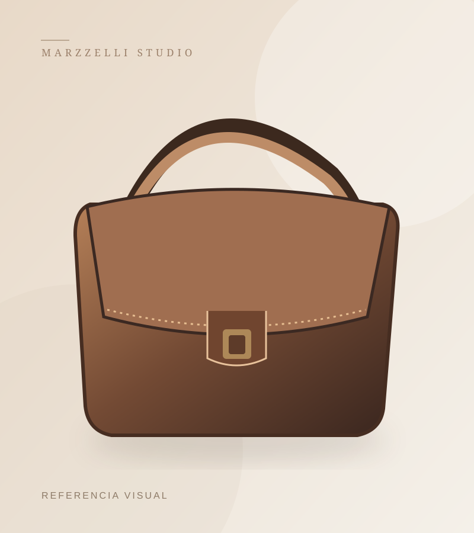

Artículos de cuero
Accesorios y piezas elaboradas en cuero, con especial atención a su uso y presentación.
Una empresa peruana dedicada a la confección de artículos de cuero y afines.

DISEÑO · TEXTURA · FUNCIONALIDADNos dedicamos a la fabricación y confección de carteras, mochilas, calzado, correas, billeteras, morrales y monederos, tanto para dama como para caballero.
Trabajamos con propuestas en cuero, tela textil y combinaciones de materiales. Esta web presenta las líneas que elaboramos y permite conocerlas de una manera sencilla.
Explorar productos →Accesorios y piezas elaboradas en cuero, con especial atención a su uso y presentación.
Diseños de tela textil y combinaciones de tejidos con cuero para diferentes estilos.
Líneas variadas para distintas ocasiones y necesidades cotidianas.